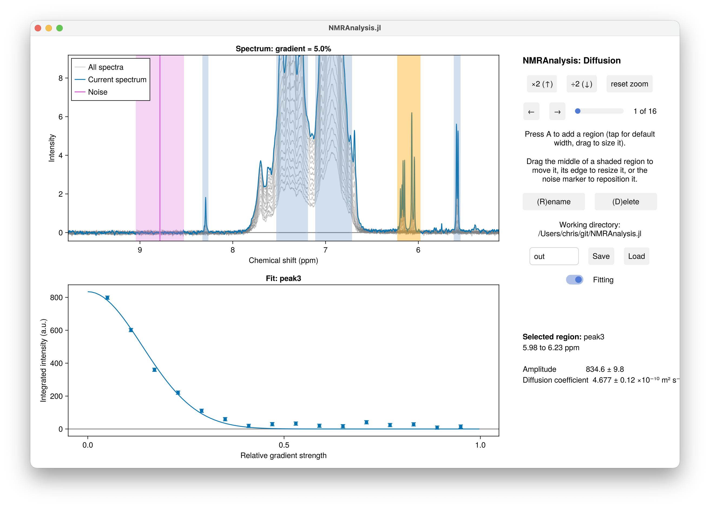

Diffusion
diffusion1d fits a diffusion (DOSY) experiment to the Stejskal-Tanner equation, giving the translational diffusion coefficient and, where the solvent and temperature are known, the hydrodynamic radius.

Running the analysis
using NMRAnalysis
results = diffusion1d("106")Call it with no arguments at all to be asked for the experiment folder.
The routine first reads the acquisition parameters and offers each one for confirmation. Press enter to accept a value, or type a replacement:
Parsing experiment parameters...
Gradient pulse length δ = 4000.0 µs (2*p30). Press enter to accept, or type a new value:
Diffusion delay Δ = 0.1 s (d20). Press enter to accept, or type a new value:
Gradient shape factor σ = 0.9 (gpnam6 = SMSQ10.100). Press enter to accept, or type a new value:
Maximum gradient strength Gmax = 0.55 T m⁻¹ (typical for Bruker systems). Press enter to accept, or type a new value:
The gradient ramp is not stored by Bruker, so it has to be entered here.
A linear ramp over 16 spectra is assumed; for any other shape, pass `gradients` instead.
Enter initial gradient strength / %: 5
Enter final gradient strength / %: 95The analysis window then opens. Put the region over the signal you want to measure, put the noise marker somewhere empty, check the fit, and press Save.
Bruker does not always record the gradient list, so the initial and final gradient strengths have to come from you. They are what you typed into TopSpin's dosy dialogue, and keeping a note of them with the data is worth the trouble. Only linear ramps are generated from the answers; for a quadratic or exponential ramp, pass the gradient strengths yourself.
Giving the parameters directly
Anything you pass as an argument is taken as given and is not asked about, so a settled analysis can be repeated without any typing:
g = collect(LinRange(0.05, 0.95, 16)) # relative gradient strengths, 0 to 1
diffusion1d("106", g; δ=4e-3, Δ=0.1, σ=0.9, Gmax=0.55)| Argument | Meaning | Read from |
|---|---|---|
gradients | Relative gradient strengths, 0 to 1, one per spectrum | nothing: always yours to supply |
δ | Gradient pulse length, in seconds | 2 × p30 |
Δ | Diffusion delay, in seconds | d20 |
σ | Gradient shape factor | gpnam6: 0.9 for SMSQ, 0.6366 for SINE, else 1.0 |
Gmax | Maximum gradient strength, in T m⁻¹ | not recorded; 0.55 is typical for Bruker |
coherence | The coherence being observed | defaults to SQ(H1) |
Note that δ is in seconds as an argument, but is shown and typed in µs at the prompt, where microseconds are what the spectrometer deals in.
The solvent and temperature are read from the acquisition parameters (solvent and te) and are used only for the hydrodynamic radius. Where the solvent is neither D2O nor H2O+D2O, the diffusion coefficient is still reported but the radius is not.
What is fitted
The Stejskal-Tanner equation, with the finite gradient length correction:
\[I(g) = I_0 \exp \left( -\left[ \gamma\delta\sigma g G_\mathrm{max} \right]^2 \left[\Delta - \delta/3 \right] D \right)\]
where $g$ is the relative gradient strength and $\gamma$ the gyromagnetic ratio.
| Parameter | Meaning |
|---|---|
A | Amplitude |
D | Diffusion coefficient, ×10⁻¹⁰ m² s⁻¹ |
viscosity | Solvent viscosity at the sample temperature, mPa s |
rH | Hydrodynamic radius, Å |
The hydrodynamic radius follows from the Stokes-Einstein relation,
\[D = \frac{k_B T}{6\pi \eta r_H},\]
with the viscosity $\eta$ estimated from the solvent and temperature by the treatment of Cho et al., J. Phys. Chem. B (1999) 103, 1991-1994.
results = diffusion1d("106")
param(results[1], :D) # ×10⁻¹⁰ m² s⁻¹, with uncertainty
param(results[1], :rH) # ÅNotes
Integrate a region that is well resolved and present in every spectrum of the ramp. For a protein, the amide envelope or the methyl region both work well; avoid the water signal and anything close to it.
Diffusion experiments are not currently recognised by analyse, because the gradient ramp cannot be read from the data. Call diffusion1d directly.